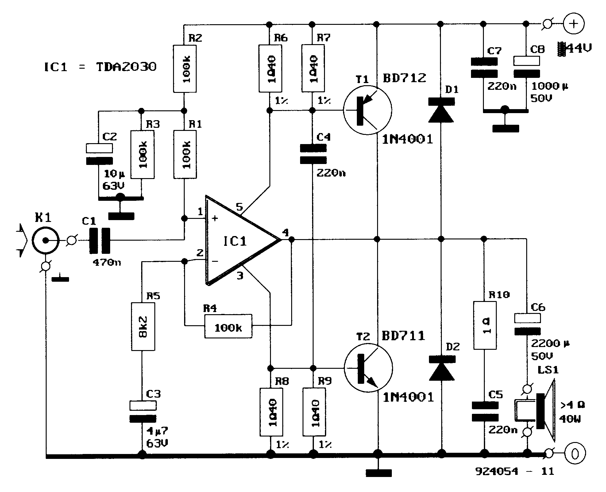
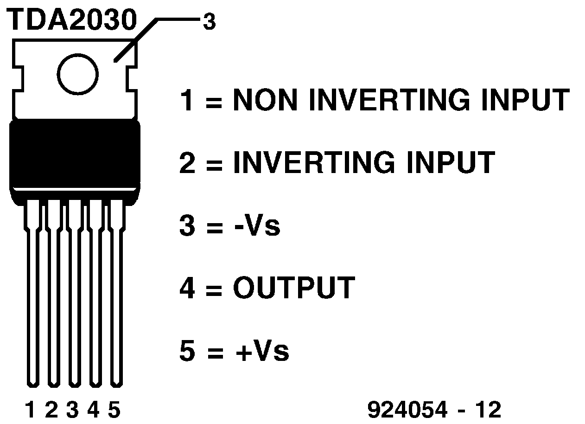
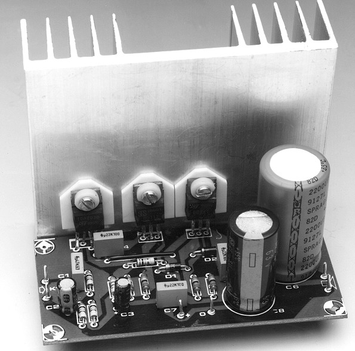
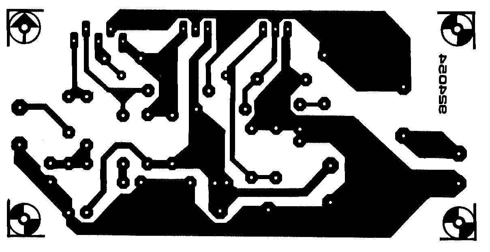
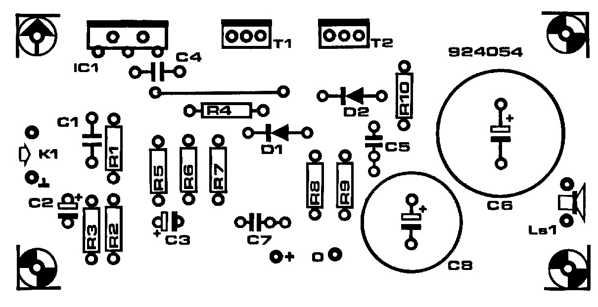

Voorbeeld 2: Klasse B versterker#  Fig. 74 Basisschema van de versterker#  Fig. 75 Interne structuur van de versterkerchip#  Fig. 76 Foto van de versterker#  Fig. 77 Layout van de versterker#  Fig. 78 Bestukking van de versterker#